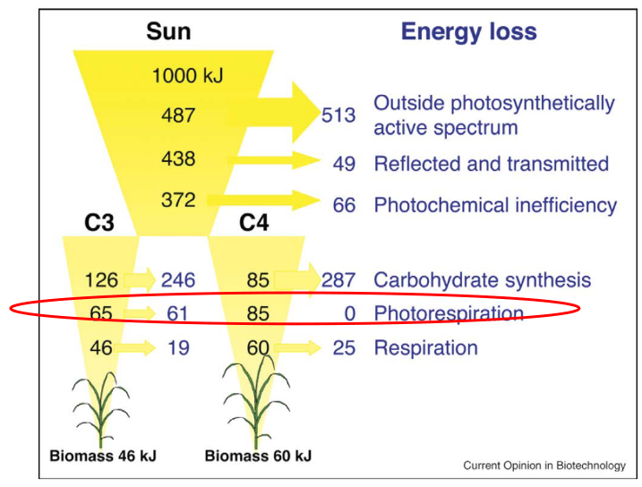
5 Carbon Assimilation Reactions of Photosynthesis
The thing about photosynthesis is that the process doesn’t yield much energy. As we can see from the above diagram, only a little bit of energy is actually absorbed from the sun - everything else is lost in the form of heat.
Because of this, it’s important that we find ways to improve this energy absorbed from the sun (i.e., efficiency)
5.1 Calvin Cycle
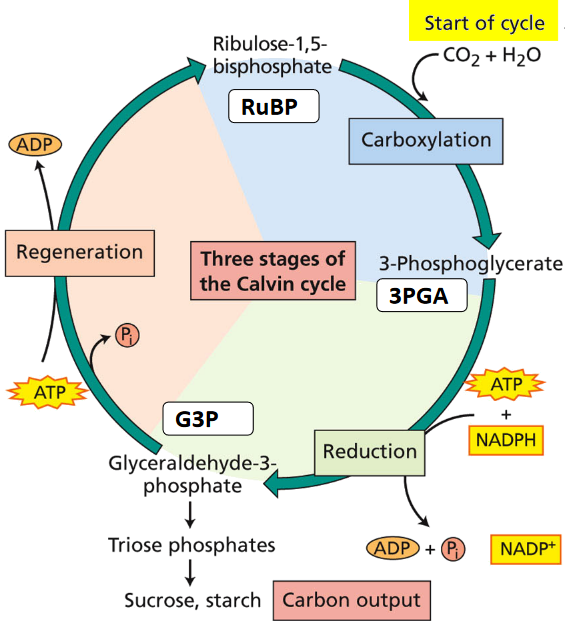
The Calvin cycle is the light-independent reaction of photosynthesis and happens in the stroma (i.e., the space within the chloroplast). The cycle does three things:
- Combine carbon dioxide (i.e., CO2) with a sugar called ribulose-1,5-biphosphate (i.e., RuBP) to form two three-carbon intermediary products: 3-phosphoglycerate (i.e., 3PGA).
- Reduce 3PGA to form something called glyceraldehyde-3-phosphate (i.e., G3P).
- Remake RuBP.
In short, we can summarize the Calvin cycle using this chemical equation:
\[\begin{align} &3CO_2 + 5H_2O + 6 NADPH + 9 ATP \stackrel{\text{Rubisco and other enzymes}}{\longrightarrow} \\ &G3P + 3H^+ + 6NADP^+ + 9 ADP + 8P_i \end{align}\]
5.1.1 What is Rubisco?
This is an enzyme that many scientists want to know more about.
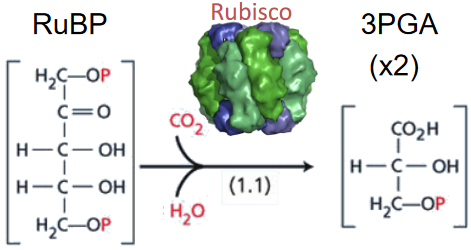
The enzyme rubisco - short for “Ribulose-1,5-biphosphate carboxylase / oxygenase” - is responsible for turning one molecule of RuBP into two molecules of 3PGA.
What’s interesting is that rubisco is the most common protein on Earth, but this enzyme often takes the most time to do its job in the dark portion of photosynthesis. Though, what’s also interesting is that there are more efficient enzymes than the Rubisco that crops have.
5.1.2 Stages of Calvin Cycle
This cycle has three main stages:
Reduction
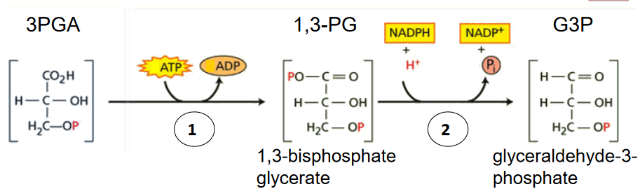
Reduction Portion of Calvin Cycle In this portino of the cycle, there’s an enzyme called 3PGA Kinase. It basically phosphorylates (i.e., adds a phosphate group) 3PGA to turn it into 1,3-PG.
Then, another enzyme called NADP-G3P dehydrogenase reduces that 1,3-GP into the G3P that was mentioned earlier.
Carboxylation and Reduction

Carboxylation and Reduction Portion of the Calvin Cycle When we add carbons to three RuBP molecules, this gives us six G3P molecules. One of thes G3P molecules are used in carbon metabolism and the other five are used to re-make RuBP.
Regeneration
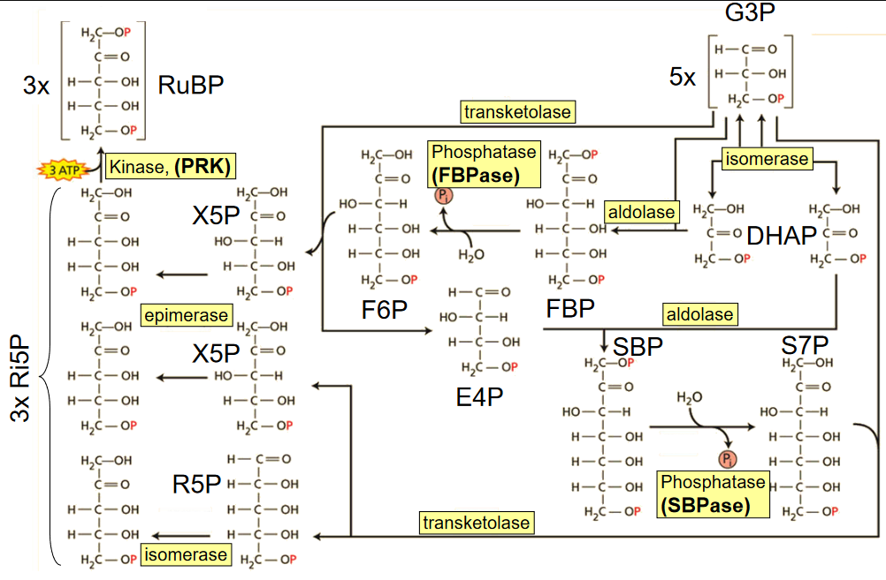
Regeneration Portion of the Calvin Cycle In this part of the Calvin cycle, the RuBP molecules are regenerated usign the RuBP molecules.
5.2 Rubisco
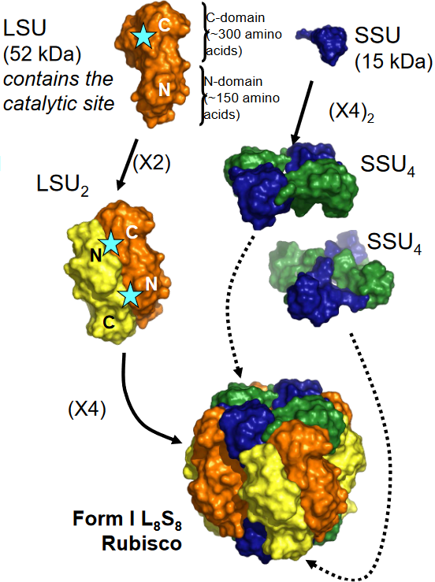
Rubisco is like a big protein (i.e., around 550 kDa) with eight large parts (i.e., LSU) and eight small parts (i.e., SSU), making a total of 16 parts. These LSU parts form pairs called dimers, and each dimer has two special spots for chemical reactions (i.e., the stars). These spots are made up of different parts of the LSU. All Rubiscos have these same spots.
These dimers group together to form an eight-part core (i.e., L8). Around this core, there are eight small subunits (SSUs), split into two groups – one at the top and one at the bottom of the core. The core’s full activity depends on these SSU parts.
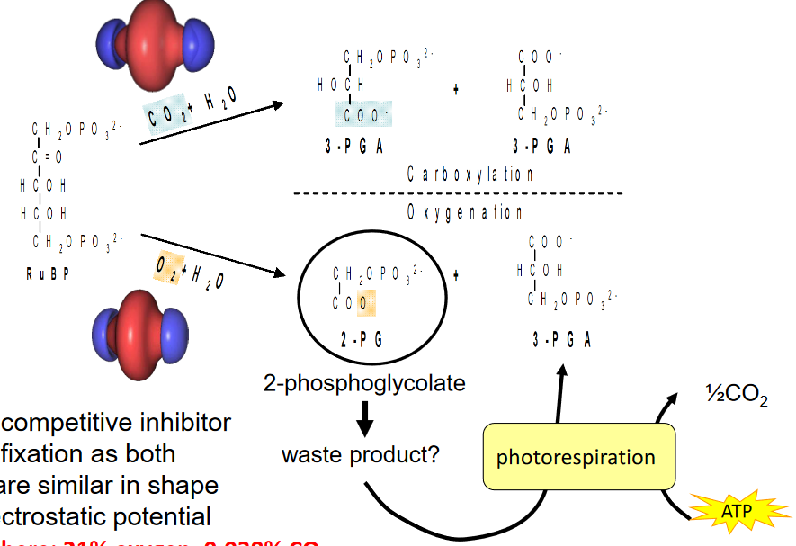
Apart from its main job of adding CO2 to RuBP, Rubisco can also do something else. It can work with O2 and attach it to RuBP. However, this oxygen part is like a competitor to the carbon dioxide. They look alike and behave in a similar way, so sometimes oxygen gets in the way of CO2 doing its job.
5.2.1 Activation with CO2 and Mg2+
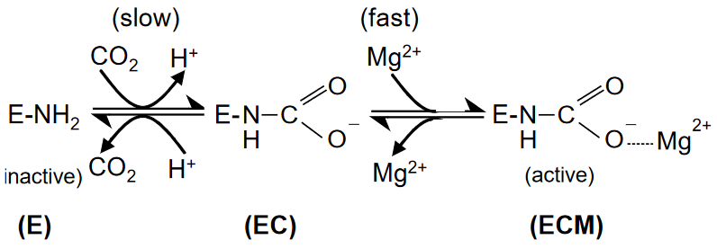
There’s a special spot in all Rubisco large subunits called Lys 201, which plays a crucial role. It helps CO2 slowly stick to it, forming something called a carbamate (EC). This CO2 that sticks here is like an “activator” and is different from the CO2 used for the main job of fixing carbon with RuBP.
To make sure this carbamate is stable, it needs the help of magnesium ions (Mg2+). When these ions quickly attach to the active site, it makes the spot ready for the actual chemical reactions to happen.
5.2.2 Photorespiration
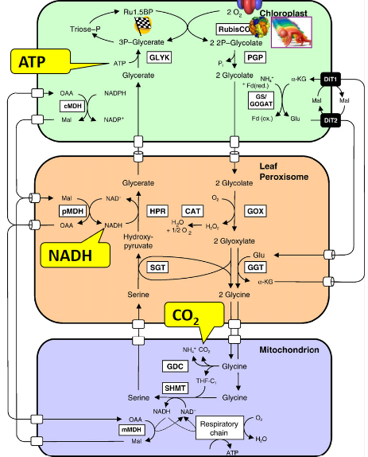
When Rubisco uses oxygen instead of carbon dioxide to work with RuBP, it’s not very efficient. This is considered wasteful because it requires a lot of energy and resources to fix the mistakes that happen during this process. It takes up energy (ATP) and some other important stuff, and it even loses some of the carbon dioxide that was supposed to be captured.
This problem with Rubisco’s preference for oxygen over carbon dioxide (called CO2 / O2 specificity) affects how efficiently plants can use carbon dioxide in photosynthesis. It determines whether carbon gets used for making sugars in the Calvin cycle (good) or gets lost in a less useful process called photorespiration (not so good).
5.2.3 Catalysis
Rubisco manages five different steps during catalysis, and each of these steps is complex enough that it would typically need its own enzyme to get the job done.
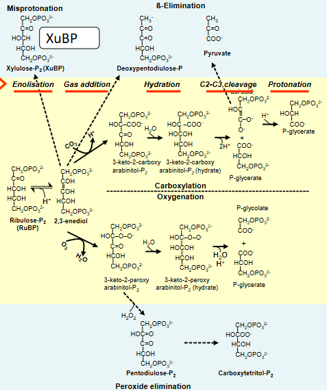
However, alongside its main job, Rubisco sometimes gets sidetracked into unproductive side reactions, shown in blue. These side reactions aren’t helpful; they can either create compounds that inhibit Rubisco’s own function (like XuBP) or decrease the amount of a useful product called 3-PGA that should be produced. These side distractions reduce the overall efficiency of Rubisco’s work.
5.2.4 Rubisco is Inefficient
Rubisco isn’t good at capturing carbon dioxide. There are a few reasons for this:
Abortive Side Reactions
Rubisco sometimes gets distracted by unproductive side reactions.
Low Specificity for CO2
It isn’t very picky and often mistakes oxygen for carbon dioxide.
Slow Working Speed
Rubisco works quite slowly, with a turnover rate of about one to two reactions per second in real-life conditions.
Because of these limitations, plants have to invest a lot of their resources into Rubisco to make sure they can capture enough carbon dioxide to grow effectively.
5.2.4.1 Overcoming Rubisco’s Inefficiency
Rubisco plays a significant role in how much water a leaf needs to let evaporate to get carbon dioxide. This is called the transpiration ratio. In tobacco, for instance, this ratio is usually around 500 to 1000, but it can change depending on factors like light, temperature, and humidity.
The efficiency of Rubisco directly affects this transpiration ratio, especially when there isn’t much carbon dioxide around. If Rubisco works better (meaning it can work faster and is better at picking carbon dioxide over oxygen), it allows the leaf to do its job with less carbon dioxide. As a result, the leaf can close its stomatal pores a bit to reduce water loss while still getting enough carbon dioxide for photosynthesis.
5.3 Rubisco Activase
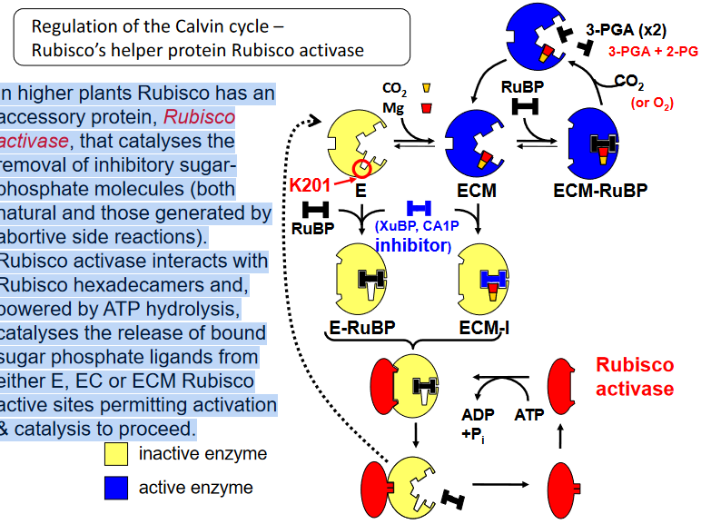
In higher plants, Rubisco has a helper called Rubisco activase. This protein’s job is to clean up any mess left behind by inhibitory sugar-phosphate molecules. These inhibitory molecules can come from natural processes or the side reactions we talked about earlier.
Rubisco activase works by interacting with Rubisco’s big structures and using energy from ATP to get rid of these sugar-phosphate molecules that are stuck to Rubisco’s active sites - E, EC, or ECM. This cleaning process allows Rubisco to get back to work, so it can do its job of capturing carbon dioxide and helping with photosynthesis.
5.3.1 Structure of Rubisco Activase
Rubisco activase is a protein that’s relatively small, measuring about 42 to 46 kDa. In some plants, there are two slightly different versions of this protein due to alternative splicing of the same genetic instructions. These variations mainly differ in the length of their tail-end.
For Rubisco activase to do its job properly, six of these protein molecules need to come together and form a circular hexamer complex. This arrangement was only figured out in 2011, after 20 years of research.
Interestingly, the 46 kDa version of Rubisco activase has some cysteine residues in its tail-end. These cysteine parts are important because they allow its activity to be regulated by a system involving ferredoxin and thioredoxin.
5.4 Regulating the Calvin Cycle
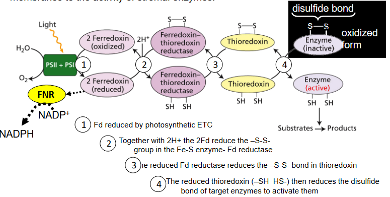
The Calvin cycle involves several enzymes like FBPase, SBPase, PRK, 1,3-PG dehydrogenase, and sometimes Rubisco activase. These enzymes don’t work at full speed all the time; their activity is actually controlled by light.
This control happens through something called the ferredoxin-thioredoxin system. It’s like a link that connects the light absorbed by the thylakoid membranes to the performance of these enzymes in the stroma, the fluid inside the chloroplasts. So, when there’s light, these enzymes can work better, which is important for photosynthesis.
When light is present, what happens is that there’s more magnesium and less H+ ions, and this helps activate FBPase, SBPase, PRK, and Rubisco.
5.4.1 Why Regulate the Calvin Cycle?
Running the Calvin cycle just right is super important. It needs to go at a pace that matches the current conditions, like how much sunlight there is. Also, the amounts of different substances within the cycle need to stay balanced. If the cycle goes too fast or slow at different points, it can mess things up by storing too much of some substances and causing problems.
Getting out of the cycle also has to be carefully managed. If not enough triose phosphates are taken out, it causes a buildup of certain sugars, and there won’t be enough phosphate for making ATP. On the other hand, if too much is removed, we can’t use the energy and reducing power produced during the light reactions effectively. So, it’s crucial to strike the right balance.
5.5 Overcoming Rubisco’s Limitations with Other Plants
5.5.1 C4 Photosynthetic Cycle for Capturing CO2
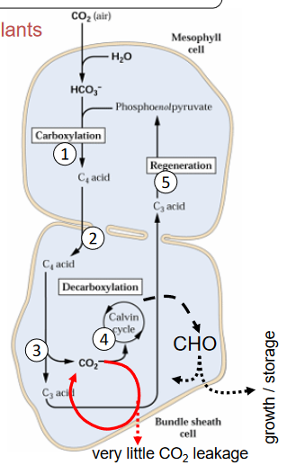
In C4 plants, the process of capturing carbon dioxide involves five stages:
Carboxylation in Mesophyll Cells
It starts with a molecule called PEP being combined with HCO3- (not CO2) by an enzyme called PEP carboxylase in the mesophyll cells. This forms another 4-carbon acid, like malate or aspartate.
Transport to Bundle Sheath Cells
These 4-carbon acids are then moved to the bundle sheath cells.
Decarboxylation
In the bundle sheath cells, these 4-carbon acids are transformed to release CO2 and a 3-carbon acid.
CO2 Fixation
This released CO2 is captured by Rubisco in the bundle sheath cells through the Calvin cycle.
Transport Back to Mesophyll Cells
The 3-carbon acid product goes back to the mesophyll cells to make more PEP, and the cycle continues.
5.5.2 Favorable Characteristics in C4 Plants
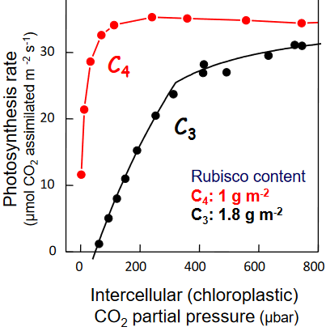
C4 plants have a clever way of concentrating carbon dioxide near Rubisco, the enzyme that helps with photosynthesis. This has some important benefits. It reduces the chance of Rubisco mistakenly using oxygen, which is a good thing because it lowers the rate of photorespiration.
Additionally, these plants don’t need as much Rubisco, which is a protein, because they have higher Vcmax rates. This makes them better at using nitrogen efficiently. Also, they use bicarbonate (HCO3-) as their main source of carbon, and this doesn’t lead to oxygenation like CO2 can. Because of this, C4 plants can operate with lower levels of CO2 inside their cells. This means they can have smaller stomata openings, which helps them use water more efficiently compared to C3 plants.
5.5.3 CAM Photosynthesis
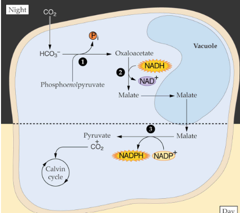
CAM photosynthesis is a kind of photosynthesis that happens and is regulated by phosphorylation instead of light.
CAM photosynthesis is used by plants that live in dry places like succulents (such as cacti) and some tropical plants like orchids. The way they capture carbon dioxide is quite similar to C4 plants. However, CAM plants do something interesting. Instead of separating the two steps of capturing CO2 in different parts of the plant, they do it at different times of the day.
One notable thing about CAM plants is how they control the opening and closing of their stomata, the tiny pores on their leaves. Unlike most plants that open stomata during the day and close them at night, CAM plants do the opposite. They open their stomata at night and close them during the day. This helps them save water, which is crucial in dry environments.
However, there’s a trade-off. Because CAM plants can’t store as much of the substances they make as other plants, they don’t grow as much biomass each day.